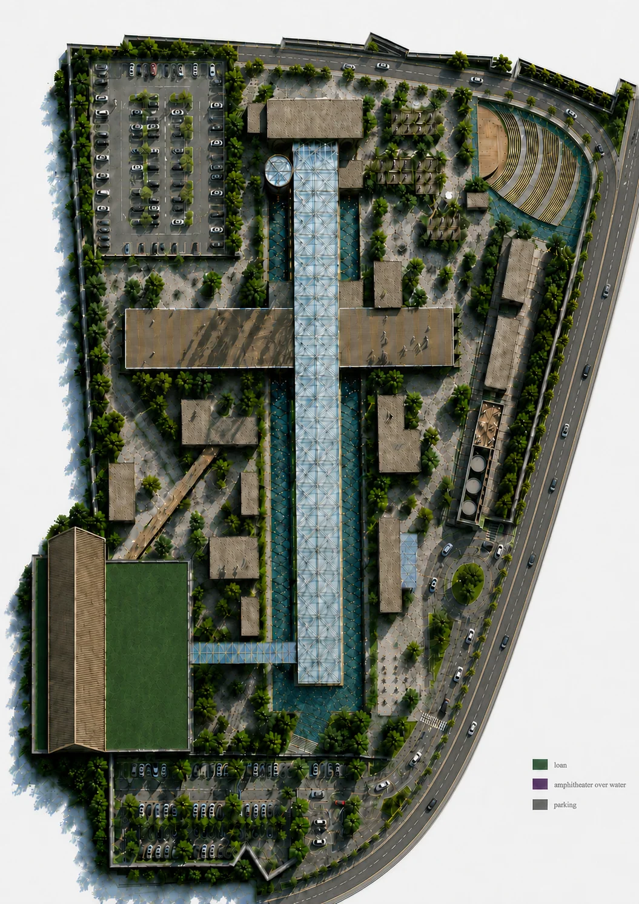
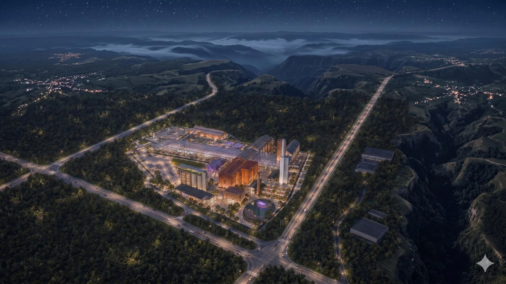
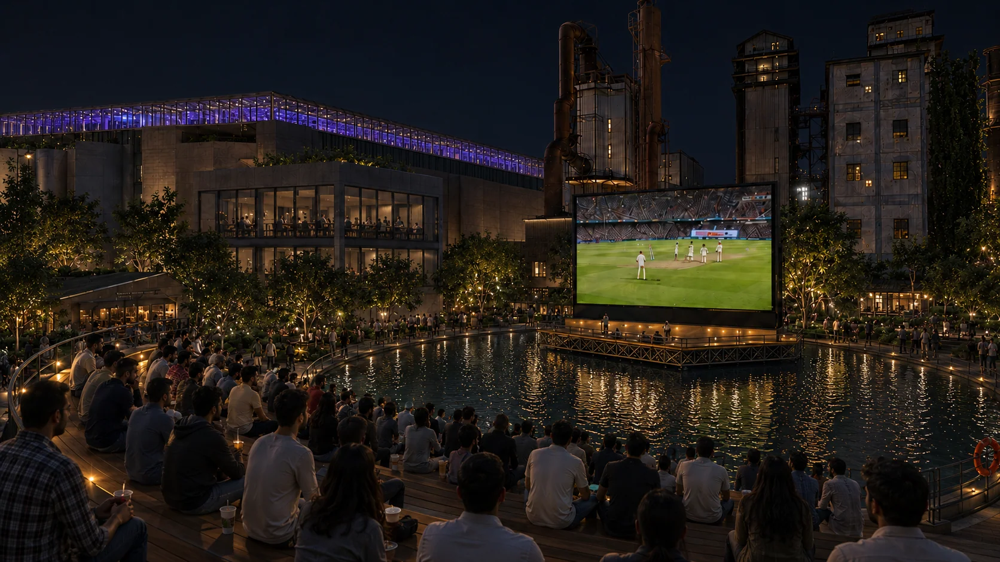
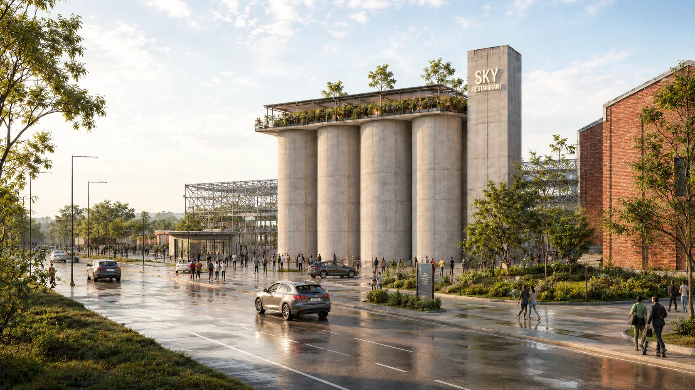

Overview
An adaptive-reuse proposal for the cement factory that treats rain as part of the public experience. Retained industrial structures support a new cultural destination with covered routes, performance, exhibition and gathering spaces.
01
An industrial campus reopened
The masterplan reuses the factory’s spatial structure and connects new activities through a covered pedestrian spine.


02
Rain, performance & the silos
New programmes occupy the spaces between and within the industrial structures.


Related
Continue
exploring